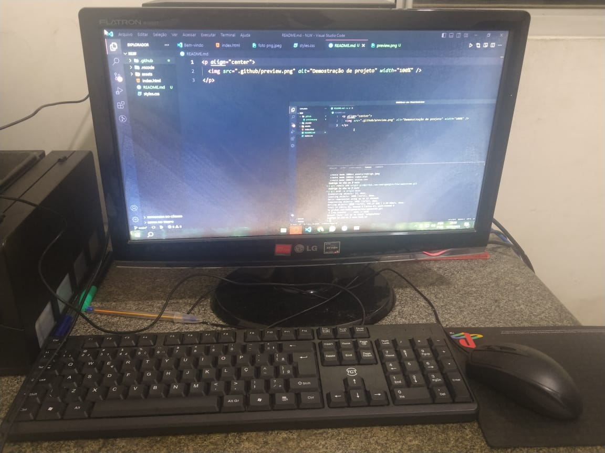

28 de Dezembro de 2022
Meu Primeiro pc

Esse foi o dia que eu conheci minha ferramenta de trabalho pela primeira vez. Desde pequena
meu sonho sempre foi ter um computador, tanto para estudar programação quanto para jogar meus jogos favoritos e nesse dia minha vida mudou por completo, pois eu estava realizando um grande sonho meu.